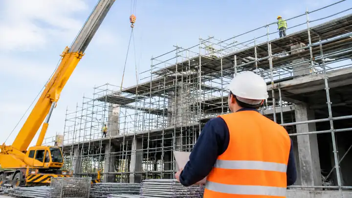
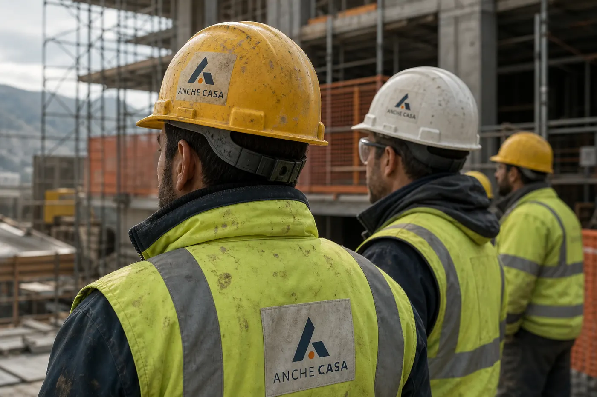

La sua esperienza
Anni di coordinamento, direzione lavori, RSPP e verifiche ispettive. È il percorso che ti segue sul cantiere.

Quando entri, trovi l’esperienza sul campo della dottoressa Nicoletta Ciani. Anni di cantieri, poi l’incontro con Anche Casa. Da lì il ramo sicurezza della rete segue il tuo lavoro.
Scrivi a SicuraAnni di coordinamento, direzione lavori, RSPP e verifiche ispettive. È il percorso che ti segue sul cantiere.
Quel percorso ha incontrato Anche Casa. Il ramo sicurezza della rete passa da questo accordo, e lo trovi già in carico.
Geometri, ingegneri e architetti restano sul tuo incarico. Da Viale Parioli, a Roma, fino a tutta Italia.

A quel tavolo il lavoro sul campo e Anche Casa hanno chiuso l’accordo. Il ramo sicurezza della rete è quello che ti segue.
Teatro di Marcello, Città del Vaticano, Marina Militare, gallerie ANAS. Sono gli anni che trovi dietro il tuo incarico.

Entri in un percorso già fatto. Coordinamento, RSPP e ispezioni non partono da un fascicolo vuoto.
Lavori già chiusi, dello stesso tipo del tuo. Coordinamento, RSPP e ispezioni restano incarichi diversi.
Ex Antiquarium comunale, Teatro di Marcello, centro sportivo della Città del Vaticano, Lungotevere per TEVEREVER, coperture della Marina Militare a Santa Rosa, allestimento dell’Accademia Valentino.
Commesse ANAS S.p.A., comprese le gallerie della SS 38 dello Stelvio e della SS 36, in vista di Milano Cortina 2026.
Verifiche di secondo livello negli stabilimenti di Campi Bisenzio, Cisterna di Latina e Roma.
Incarichi per Jaguar Land Rover Italia, Adiramef, Tecnoascensori e altre società.
Il ramo sicurezza entra nella rete. La gestione resta qui, sul tuo incarico.
Il lavoro già fatto sui cantieri ha incontrato Anche Casa. L’accordo porta il ramo sicurezza dentro la rete, e tu lo trovi già affidato.
Sicura resta autonoma e ne ha la gestione. L’incarico lo firmi con Sicura. Il lavoro usa la piattaforma AncheCasa Sicurezza.
Una parte degli incarichi di alto profilo già seguiti. Non è l’elenco intero.

Checklist, report e tracciabilità delle azioni. Norma, cantiere e persone restano sul tuo incarico.
Vedi i corsi